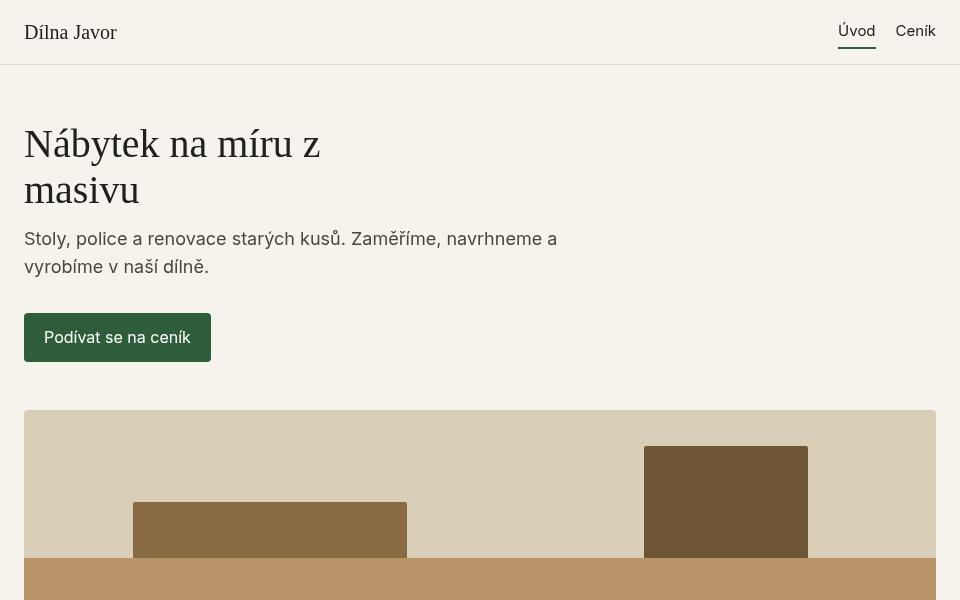
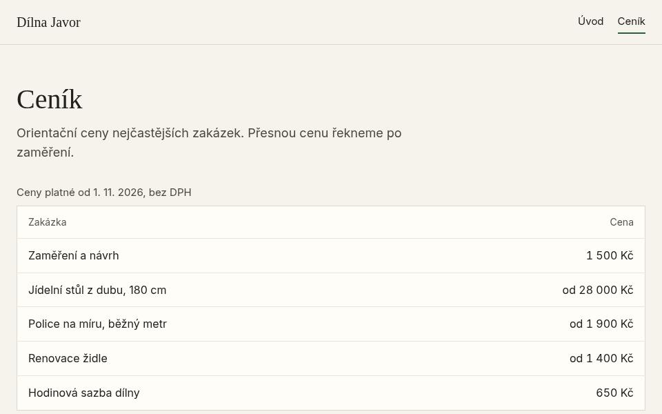

Co je potřeba udělat
Jedno zadání stačí. Mel ho rozdělí mezi specialisty, souběžně pracují nejvýš tři.
Zkus třeba
Oprav chybu, kvůli které se po přihlášení ukáže prázdná stránka kód Přidej na web stránku s ceníkem podle přiloženého PDF web a přílohy Projdi web a sepiš, co brání čtečkám obrazovky kontrola Shrň přiložené podklady do tří bodů pro klienta texty
Než začneš, dvě věci čekají na tebe
Přidej na web stránku s ceníkem. Položky jsou v CSV, PDF je loňský tištěný ceník kvůli textům a poznámkám. Vzhled drž podle současného webu, snímek přikládám.
cenik-2025.pdf PDF · 2 strany · 148 kB polozky.csv CSV · 5 řádků · 1 kB 
soucasny-web.png PNG · 1280 × 800 · 96 kB
14:02
Mel 14:02
Rozděluji to na šest zastávek. Texty a strukturovaná data na sobě nezávisí, takže jedou souběžně. Stránku sestavím, až budou obě hotové.
Plán běhu 3. zastávka z 6 · 4:31
Projít zadání a tři přílohy hotovo 0:38
Navrhnout rozložení stránky I IrisUI/UX design hotovo 2:05
Souběžně, obsazená 2 místa ze 3
Napsat texty ceníku R RunaČeské texty probíhá 1:48
cenik-2025.pdf14:05
web/texty/cenik.md14:06
Runa: V PDF stojí renovace židle 1 200 Kč, v CSV 1 400 Kč. Beru CSV, je novější. Jestli platí PDF, pošli to do běhu.
Připravit strukturovaná data N NodiStrukturovaná data probíhá 0:52
web/cenik.jsonld14:06
Sestavit stránku a odkaz v menu čeká na 3 a 4
Zkontrolovat přístupnost A AlvaPřístupnost čeká na 5
Fronta 2 zprávy, odešlou se po doběhnutí popořadě
1 Do ceníku přidej poznámku, že ceny jsou bez DPH
2 Až bude stránka hotová, zkontroluj ji i na telefonu
3. zastávka z 6 · Runa a Nodi pracují souběžně4:31
V patičce změň otevírací dobu na po–pá 7–16 a místo telefonu dej e-mail. Pak to nahraj na test, ať si to prohlédnu.
14:36
Mel 14:38 Úprava i kontrola jsou hotové. Zbývá nahrání na test a to čeká na tebe. Než schválíš, projdi si změny níž.
Plán běhu 4. zastávka z 4 · stojí
Projít zadání hotovo 0:12
Upravit patičku na obou stránkách hotovo 0:54
Zkontrolovat změny K KernKontrola kódu hotovo 0:31
Nahrát na test J JunoNasazení čeká na tebe
Změny souborů 2 soubory · +2 −2 Přijmout vše
web/index.html+1 −1 Přijmout Vrátit Zpět
20 20 <footer><div class="wrap"> 21 21 <p>Dílna Javor · ukázková data pro návrh</p> 22 −odebráno <p>Po–Pá 8–17 · telefon na vyžádání</p> 22 +přidáno <p>Po–Pá 7–16 · dilna@dilna-javor.example</p> 23 23 </div></footer>
web/cenik.html+1 −1 Přijmout Vrátit Zpět
32 32 <footer><div class="wrap"> 33 33 <p>Dílna Javor · ukázková data pro návrh</p> 34 −odebráno <p>Po–Pá 8–17 · telefon na vyžádání</p> 34 +přidáno <p>Po–Pá 7–16 · dilna@dilna-javor.example</p> 35 35 </div></footer>
Nahrání na test čeká na schválení
Juno chce spustit příkaz, který zapisuje mimo projekt. Takový krok se bez tebe nespustí.
Příkaz rsync -av web/ test:/var/www/dilna-javor/Cíl test.dilna-javor.example
Rozsah 2 změněné soubory, nic se nemaže
Schválit a nahrát
Zamítnout
Schválení platí jen pro tento krok
Běh stojí na 4. zastávce · čeká na tvé schváleníZobrazit
Udělej stránku galerie z fotek ve složce realizace/. Fotky zmenši, ať se web načítá rychle.
14:26
Mel 14:26
Čtyři zastávky. Mřížku navrhne Iris, fotky zmenší a stránku zapíše Flux, nakonec to projde Alva.
Plán běhu 3. zastávka z 4 · přerušeno
Projít složku realizace/ hotovo 0:20
Navrhnout mřížku galerie I IrisUI/UX design hotovo 1:32
Zmenšit fotky a zapsat stránku F FluxWebový výkon přerušeno 3:40
Zkontrolovat přístupnost A AlvaPřístupnost čeká na 3
Spojení s modelem vypadlo uprostřed 3. zastávky. Dvě zastávky jsou hotové a uložené, devět zmenšených fotek zůstalo v pracovní kopii.
Změnit model
Vrátit změny z běhu
Podrobnosti Claude Code · poslední odpověď 14:32:07 · tři pokusy o obnovení spojení
navázáno Navazuji na přerušenou úlohu od 3. zastávky
Běh přerušen na 3. zastávce · 14:32
Projdi úvod a ceník a sepiš, co brání čtečkám obrazovky. Co jde, rovnou oprav.
10:55
Mel 11:05
Běh dokončen 4 zastávky · 9:12
Projít obě stránky hotovo 0:25
Zkontrolovat přístupnost A AlvaPřístupnost hotovo 4:10
Opravit popisek tabulky a kontrast hotovo 2:47
Ověřit opravy A AlvaPřístupnost hotovo 1:50
Kontrola je hotová: tři nálezy, dva opravené a přijaté. Třetí čeká na tebe, ilustrace ponku na úvodu potřebuje popis, který znáš jen ty.
Stránka Nález Závažnost Stav
cenik.htmlTabulka bez popisku střední opraveno index.htmlKontrast odkazů v patičce 3,9 : 1 vysoká opraveno index.htmlIlustrace ponku bez popisu střední čeká na tebe

cenik-po-oprave.pngotevřít v náhledu
zprava-pristupnost.pdf PDF · 3 strany · 164 kB nalezy.csv CSV · 3 řádky · 1 kB
Kopírovat
Doplnit popis ilustrace
Nahrát opravy na test
Hotovo v 11:05 · 4 zastávky · 9:12
Enter odešleShift Enter nový řádek
 Melhotovo0:38
Melhotovo0:38 Mel
Mel Mel
Mel